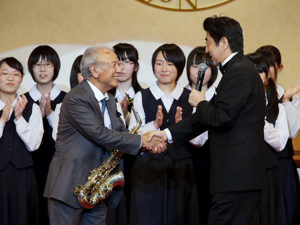
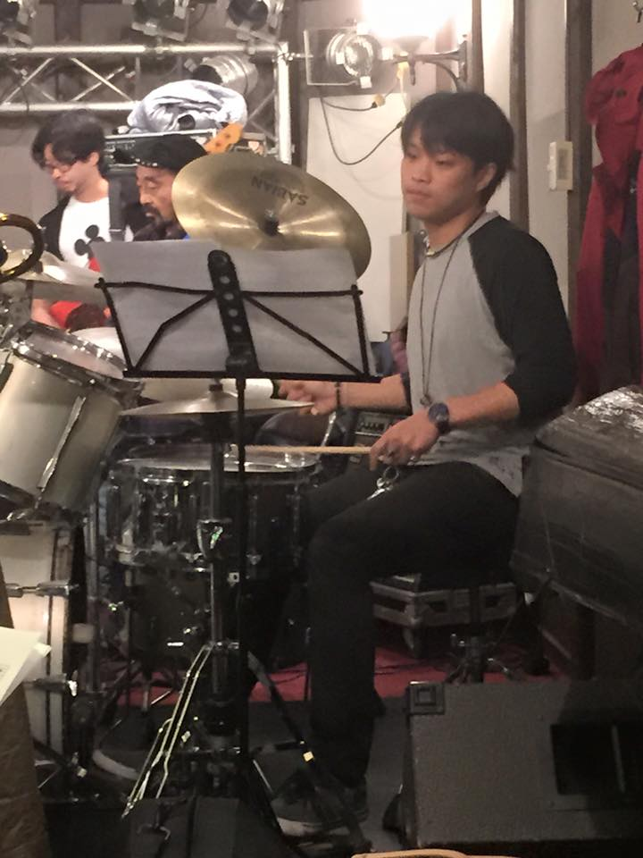
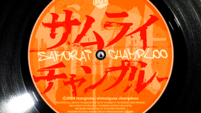
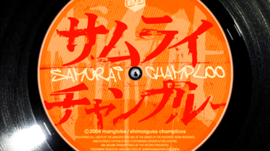

Jazz in Japan Today

Since the WWII, jazz in Japan has continued to flourish and is incredibly popular with youth and the middle class. Tokyo is one of the most notorious incubators for jazz with hundred of jazz clubs and pumping out incredible musicians as well as big jazz festivals
This popularity can be seen in the youth. I had the pleasure of talking with two Tokyo University students who both wanted to be full time jazz musicians. Although their English isn't the best, they convey what most students and people think about jazz. Just hearing their words, it seems jazz is more popular in Japan than even in America where it originally came from. Here are their quotes.
"I play the jazz in session. Every great musicians play the jazz as the job. But I play the jazz to free or wanna fun. So many time do it yourself to yourself. my friend working in jazz bar. And play the guitar. some people listening to jazz, some people tasting the alcohol. Many time,open at the big jazz festival in Japan. Many people join! Many professional also amateur.every one love! Inconspicuous everyday,but I think, many people love the jazz and the all music!"
"I think Jazz music is very important. It can take in my play. Swing beats is very difficult so I practice every day, every day , every day and every day !!! To be frank, Jazz isnt prevalent especialy among youth. So they have to listen to Jazz."
In addition, jazz has crept into every type of art form in Japan! The most famous example is anime. Anime is an incredibly respected and popular art form and when the top anime in Japan has jazz music, it shows just how deep jazz has traveled.
The best example of this is "Cowboy Bebop". It is currently ranked 3rd for most popular anime according to Anime News Network. The soundtrack contains famous big band jazz tunes. Closely after at rank 14 is my favorite anime, Samurai Champloo whose track was created by the most famous jazz hop musician Nujabes. You can find examples of these songs in Examples of Japanese Jazz
 
